Chart Plotting Tools in Scientific Calculator Plus
MFP programming language has provided a set of graphing functions for user to plot 2D, polar or 3D charts. However, if a chart is sophisticated, parameters of a plotting function will be very long and hard to input, especially in Android.
The Smart Calculator tool in Scientific Calculator Plus for Android is an alternative to plot chart for expressions. User only needs to input mathematical equations.and tap plot button. Smart Calculator will then generate the underlying function call and plot the chart. However, all the graphs plotted by Smart Calculator are based on independent mathematical equations. If user needs to draw some complicated charts in selected ranges, the independent Chart Plotter is the right choice.
The independent Chart Plotter can plot 2D, polar and 3D charts. The ways to draw different types of charts are quite similar. For example, in order to draw a 2D chart, firstly user is required to set chart name (i.e. chart file’s name), chart title, x and y axis titles, and show grid or not. Then user needs to tap the “Add curve” button one or several times to add (at most 8) curves to draw.
In order to define a curve, user has to input curve’s title, colour, shape of sample points and pattern of connection lines between sample points. All these configs are intuitive. The difficult part is what is t and how to config X(t) and Y(t).
It is well known that any non-branched 2D curve can be looked on as the track of a moving point. The projection of the track on x axis is the point’s x-coordinate function of t, i.e. X(t). Similarly, the projection of the track on y axis is the point’s y-coordinate function of t, i.e. Y(t).
Scientific Calculator Plus chooses this way to define a curve because sometimes an x value can be mapped to several points in a 2D curve (same as some y values). For example, a circle in a traditional 2D (not polar) coordinate cannot be drawn from single equation in Smart Calculator. However, using the independent chart plotter, two functions of t can be selected to define x and y. If the radius of the circle is 2.5, the center of the circle is (1.3, -1.7), then X(t) is 2.5*cos(t)-1.3 and Y(t) is 2.5*sin(t)+1.7, t changes from 0 to 2*pi. In this way, this circle is accurately defined and can be drawn by the chart plotter.
The above solution is able to draw simple curves as well as complicated graphs. The approach is letting X(t) equal t, then Y(t) becomes the to-be-drawn function, not of x but of t. For example, user could set X(t) to be t and Y(t) to be t**2 and let t change from –t to 5. Then a parabolic curve y == x**2 where x is from –5 to 5 is drawn.
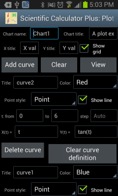
Figure 1: Using the independent Chart Plotter to draw 2D chart.
The follows are examples to draw different types of 2D curves using the independent Chart Plotter. For example, to draw a line segment from (3, 5) to (3, 15), user could set t from 5 to 15, set step Auto, X(t) is 3 and Y(t) is t.
If a curve includes singular points, i.e. y = tan(x), user could set t from -2*pi to 2*pi, set step Auto, X(t) is t and Y(t) is tan(t). The plotted curve is shown as the left part in the following chart.
However, if the step of t is not Auto, i.e. user sets a step value, e.g. 0.1, Scientific Calculator Plus will not automatically detect singular points. As such the plotted curve is shown as the right part in the following chart.
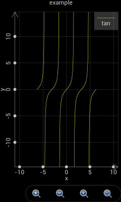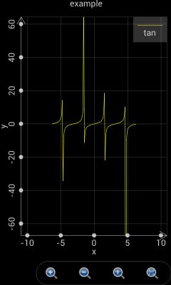
Figure 2: Scientific Calculator Plus is able to detect singular points only if the step is set Auto.
It is quite similar to draw polar charts as to plot 2D graphs. The only thing to keep in mind is that in a polar chart X(t) and Y(t) are replaced by r(t) and θ(t), where r is the radius and θ is the angle.
For example, if t changes from 0 to 2*pi, step is Auto, r(t) is cos(t) and θ(t) is t, a circle is plotted as the green curve shown in the following chart.
If t changes from -2*pi to 2*pi, step is Auto, r(t) is 2*sin(4*t) and θ(t) is t, a chamomile is drawn as the blue curve shown in the following chart.
If t changes from -1.5*pi to 1.5*pi, step is Auto, r(t) is t and θ(t) is t, a heart shape is plotted as the magenta curve shown in the following chart.
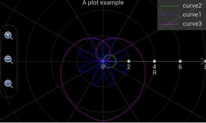
Figure 3: Draw various curves in a polar coordinate system.
Plotting a 3D graph is a bit more complicated. As shown in the following chart, user is required to input more settings. It is quite straight-forward to set up graph name, title, x, y and z axis title etc. In the curve settings, “Is grid?” means Scientific Calculator Plus will only draw grid, i.e. skeleton, of the curve without filling it. Max value and colours means, when Z value is no less than the max value, the colours on the front and back sides of the surface. Min value and colours means, when Z value is no greater than the max value, the colours on the front and back sides of the surface. If Z value is between max and min, the colour is a transition between max colour and min colour.
Different from a 2D chart, X, Y and Z are functions of internal variables u and v, not t. Scientific Calculator Plus introduces two internal variables instead of one because it is drawing a 3D surface instead of a 2D curve.
By setting X(u,v), Y(u,v) and Z(u,v), user is able to draw very interesting 3D surfaces. To plot 3D curve instead of 3D surface, user can set X, Y and Z functions of u only, i.e. the change of X, Y and Z are irrelevant to the dynamics of v.
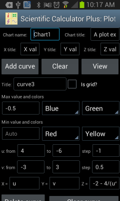
Figure 4: Draw 3D chart using the independent Chart Plotter.
The following examples demonstrate how to plot 3D charts. If user wants to draw a flat surface at x = 10 and in parallel with y and z, u can change from 0 to 10 with auto step, v is also from 0 to 10 with auto step, x is 10, y is v and z is u. The plotted flat surface is shown as the following figure.
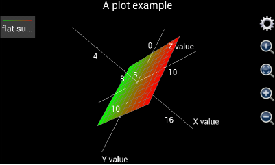
Figure 5: A flat surface at x = 10.
User may need to draw a line segment from one point to another point in a 3D coordinate system, e.g. from (x,y,z)=(1,5,6)to (x,y,z)=(10,3,9). In this case, u is set from 1 to 10, step is auto. Since x, y and z are irrelevant to v, v can be arbitrarily configed. However, user may keep in mind that the number of calculations equals u’s number of steps times v’s number of steps. It is important to keep the number of calculations minimum to accelerate the plotting. Therefore, if x, y and z are irrelevant to v, v can change from 0 to 1 with a step of 1 so that v’s number of steps is only 1. Then x is configured as u, y is (u-1)/(10-1)*(3-5)+5 and z is (u-1)/(10-1)*(9-6)+6 so that x and y and x and z are linearly correlated. Another thing user has to keep in mind is that the “Is grid?” check box must be selected. Otherwise, the line segment will be gray colored.
The plotted line segment is shown in the following chart.
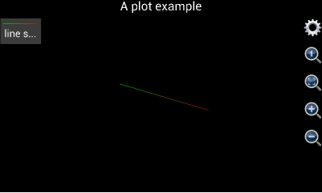
Figure 6: Draw line segment in a 3D coordinate system.
Please note that, before version 1.6.7, Scientific Calculator Plus shows x, y and z axes by default. If the axes are not wanted, user can tap the gear button and select “Not show axes and title” check box. This action will hide the axes as well as the title of the chart. Since version 1.6.7, Scientific Calculator Plus automatically hides the axes after the graph is plotted. If user wants to see the axes, s\he has to tap the gear button and uncheck the “not show axis” box. Similarly, user can hide and show title.
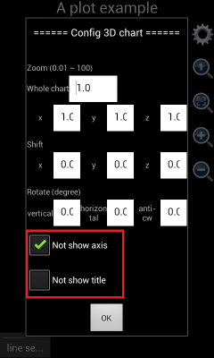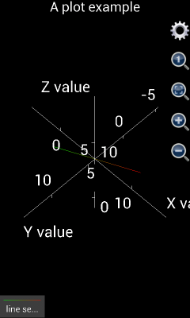
Figure 7: Show and hide axes and title in a 3D chart.
In order to draw more complicated shapes, e.g. sphere, user may look on u as the degree of longitude on the ball surface, and v as the degree of latitude. Then x can be set as 3*cos(v)*cos(u) where 3 is the radius of the ball, y is 3*cos(v)*sin(u), z is 3*sin(v), u is from 0 to 2*pi with auto step, v is from –pi/2 to pi/2 with auto step.
If using version 1.6.6 or earlier, the plotted graph is shown as the left part of the following chart. It is not a ball but an ellipsoid. The reason is that x, y and z axes have different unit lengths. User has to tap the “adjust to 1:1:1” button (in the red circle) to see the right shape. However, from version 1.6.7, x, y and z axes have been automatically adjusted to 1:1:1 when the graph is plotted. Therefore the plotted chart would be similar to the right part of the following figure.
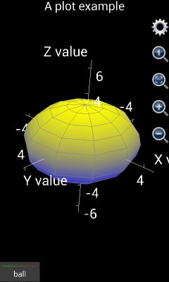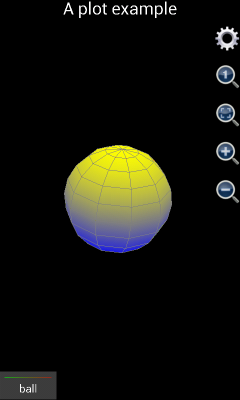
Figure 8: Draw a ball in a 3D coordinate system.
If user wants to draw a ball similar to earth, i.e. Arctic and Antarctic poles are white but close to equator it is green, two hemispheres (curves) have to be drawn. The first curve is the northern hemisphere. The “Is grid?” box should be unchecked. Max value and colours should be Auto, White and White (White means ice cap in Arctic) respectively. Min value and colours should be Auto, Green and Green (Green means the forests in the area around equator) respectively. X is 3*cos(v)*cos(u) where 3 is the radius. Y is 3*cos(v)*sin(u) and z is 3*sin(v). Here u is from 0 to 2*pi with auto step, and v is from 0 to pi/2 with auto step.
The second hemisphere is southern hemisphere. Similar to northern hemisphere, “Is grid?” box should be unchecked. Min value and colours should be Auto, White and White respectively, max value and colours should be Auto, Green and Green respectively. X is 3*cos(v)*cos(u) where 3 is the radius. Y is 3*cos(v)*sin(u) and z is 3*sin(v). Here u is from 0 to 2*pi with auto step, and v is from –pi/2 to 0 with auto step.
The plotted chart is shown below:
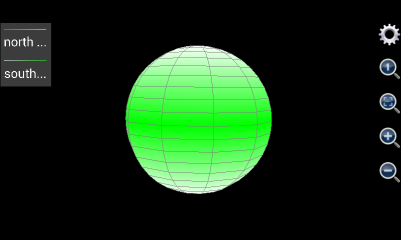
Figure 9: Draw a ball similar to earth.
Though, the approach is a bit different from drawing a ball, Chart Plotter is able to draw a cylinder. A ball has only one surface while a cylinder has three. For example, the cylinder to draw has a radius of 5, its bottom surface’s elevation is 0, and its height is 20. Since the bottom surface is a solid circle, let u be the angle ranging from 0 to 2 with a step length equal to 0.05 (this means angle changes from 0 to 2*pi and a changing step is 0.05*pi), and let v be the radius ranging from 0 to 5 with a step length equal to 5. Then x should be v*cos(u*pi), y should be v*sin(u*pi), z is the altitude so that it is always 0. Max value and colours are auto, red and red respectively, same as min value and colours because the thickness of the surface is 0.
Drawing the top surface of the cylinder is almost the same as the bottom one. Let u be the angle ranging from 0 to 2 with a 0.05 step length. Let v be the radius which is from 0 to 5 with a step equal to 5. Again, z is the altitude whose value is always 20. Max value and colours are auto, blue and blue respectively, same as min value and colour.
In order to draw the side surface, let u still be and angle changing from 0 to 2 with a step being 0.05. Now v is the altitude of each point on the side surface. Since the height of the cylinder is 20, v varies from 0 to 20 and step length is 20. Since the radius of any point on the side surface is always 5, x is 5*cos(u*pi) and y is 5*sin(u*pi). Once again, z is the altitude so that it always equals v. Since the upper surface is blue and lower surface is red, the max value and colour of side surface should be auto, blue and blue respectively, and the min value and colour should be auto, red and red respectively. The graph is shown as follows.
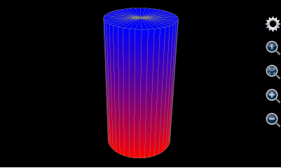
Figure 10: Draw a cylinder.
User can also draw cone(s) using this tool. A cone has two surfaces, i.e. bottom surface and side surface. The bottom one is drawn in the same way as a cylinder whereas the radius of point on the side surface is not constant but monotone decreasing with the point’s altitude.
If, for example, the maximum radius (which should be at the bottom) of the cone to draw is 5, altitude of the bottom is 0, its height is 20. Its bottom surface is the same as the bottom surface of the cylinder in Figure 1.20: . For each point on its side surface, u is its angle varying from 0 to 2 with a constant step equal to 0.05 (this means the angle’s variation range is from 0 to 2*pi and variation step length is 0.05*pi). V is the altitude of each point on the side surface. Its variation range is from 0 to 20 and step length is 20. Because radius of point on the side surface monotonically decreases with height, the radius should equal 5*(20-v)/20. As such, x is 5*(20-v)/20*cos(u*pi), y is 5*(20-v)/20*sin(u*pi), and z is v. The maximum value and colours of the side surface is auto, blue and blue respectively. The minimum value and colours of the side surface is auto, red and red respectively so that they match the colour of the bottom surface. The plotted chart is shown as below.

Figure 11: Draw a cone.
This tool can also draw many funny and interesting shapes. For instance, if u’s range is from 0 to 2*pi, v is from 0 to 10, x is v*cos(u), y is v*sin(u), and z is 6*cos(v)*exp(-v/10), the graph it generates would be like follows.
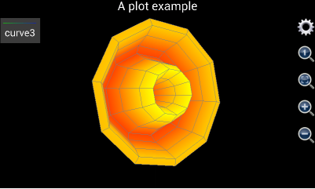
Figure 12: Draw a flower like graph.
Another example is using 3D Chart Plotter to draw a spiral line. To this end, user may set v from 0 to 10 with a step length 0.1. X is v*cos(v), y is v*sin(v), and z is v. U can be any value. However, as explained above, to ensure minimum calculation time, u should be from 0 to 1 with a step length equal to 1. And the “Is grid?” box must be checked otherwise the 3D line can only have a gray colour.
The plotted graph is shown as below:
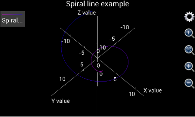
Figure 13: Draw a 3D Spiral line.
In the end of this section, a more complicated 3D graph example is demonstrated. This example shows user step by step how to draw the Oriental Pearl Radio & TV Tower in Shanghai. The photo of this building is shown below:
Figure 14: Photo of the Oriental Pearl Radio & TV Tower in Shanghai, P.R.C.
In order to draw the TV Tower, first of all user needs to find out what the building is comprised of.
The bottom of the building includes three leaning pillars to support the whole building. To draw them, the title can be empty, minimum colour is red and maximum colour is yellow, minimum and maximum values are auto (i.e. user does not input). Assume the radius of each pillar is 3, angle of inclination is 45°, and height is 20. The central points of the three pillars’ bottom surfaces are the vertexes of a regular triangle. Their coordinates are (-20*sqrt(3)/2,-10,0), (0,20,0) and (20*sqrt(3)/2,-10,0) respectively. Let u be the angle, v be the radius, u varies from 0 to 8 which means that angle ranges from 0 to 8*pi, and u’s step length is 0.25 (i.e. 1/4*pi). V’s range is from 0 to 20 and step is 20. As such, x’s expression is iff(u<=2,3*cos(u*pi)-(20-v)*sqrt(3)/2,and(u>=3,u<=5), 3*cos(u*pi), u>=6, 3*cos(u*pi)+(20-v)*sqrt(3)/2, Nan), y’s expression is iff(u<=2,3*sin(u*pi)+(20-v)/2,and(u>=3,u<=5), 3*sin(u*pi)-(20-v)*sqrt(3)/2, u>=6, 3*sin(u*pi)+(20-v)/2, Nan). And z’s expression is v.
User needs to keep in mind that the above x, y and z expressions draw three surfaces together. So question is, why use one instead of three groups of x, y and z to draw the three surfaces? Answer is, the number of surfaces in the Oriental Pearl TV Tower is more than 8, while user can input at most 8 groups of expressions in the 3D Chart Plotter. Thus at least one group of expressions need to draw more than one surfaces.
In order to draw multiple surfaces by one group of x, y and z expressions, iff (i.e. if function) must be employed to determine the condition to draw each surface. For the three supporting pillars, u’s range is from 0 to 8 which means the angle varies from 0 to 8*pi. Since a supporting pillar’s angle variation range only covers from 0 to 2*pi, by using iff function the first pillar is drawn when u is from 0 to 2 (which means angle ranges from 0 to 2*pi), the second pillar is drawn when u is from 3 to 5 (which means angle ranges from 3*pi to 5*pi), and the last one is drawn when u is from 6 to 8 (which means angle ranges from 6*pi to 8*pi). In this way, the x, y and z expressions differs at different u ranges. When u is between 2 and 3 or between 5 and 6, x, y and z are all Nan.
So another question is, why do we need the gaps between 2 and 3 and between 5 and 6 in u’s variation range. In other words, why not set u to change from 0 to 6 so that range from 0 to 2 is for the first pillar, range from 2 to 4 is for the second one and range from 4 to 6 is for the last pillar?
The answer is, although using iff function can draw different surface at different u range, the surfaces still connect to each other if no gap between them. By introducing the range gaps and setting point value to be Nan in the gaps, we disconnect the three pillar surfaces because Nan point cannot be drawn.
The (20-v)*sqrt(3)/2 and (20-v)/2 parts in x and y’s expressions realize the inclination of the pillars. They imply that the x and y coordinates of the three pillar drift with increment of z.
Notice that between the three leaning pillars an erect column stand connecting the ground and upper part of the TV tower. To draw it, user may set its title blank, uncheck the “is grid?”box, and set the minimum colour green, maximum colour yellow, and the minimum and maximum values both auto. U value ranges from -1 to 1 with a step length equal to 0.25, and v value ranges from 0 to 20 with a step length equal to 20. Assume the radius of the erect column is 2, then x is cos(u*pi)*2, y is sin(u*pi)*2, and z is the altitude which always equals v.
Above the columns of the TV tower user see a big ball. Its title is blank. The “is grid?” box is unchecked. The minimum colour is cyan and minimum value is auto. The maximum colour is red and maximum colour is auto. Assume the radius of the ball is 10. And the center of sphere is (0,0,20). U changes from –pi to pi with a step length of pi/10. V varies from –pi/2 to pi/2 with a step length of pi/10. The expression of x is 10*cos(u)*cos(v). The expression of y is 10*sin(u)*cos(v). The expression of z is 10*sin(v)+20.
Above the sphere we see three erect columns. Once again, a single group of x, y and z expressions is applied to draw the three columns in one breath. The title of the columns is blank. “Is grid?” box is unchecked. Max value and colour are auto and blue respectively. Min value and colour are auto and green. Assume the radius of each column is 1.5. X and y coordinates of center of each column are (-2,2/sqrt(3)), (0,4/sqrt(3)) and (2,2/sqrt(3)) respectively. Let u be the angle and v be the radius. Using the same approach as drawing the three leaning pillars, user sets u from 0 to 8 (i.e. angle changes from 0 to 8*pi) with a step length of 0.25. V ranges from 20 to 70 with a step length of 50. Therefore, expression of x is iff(u<=2,1.5*cos(u*pi)-2,and(u>=3,u<=5), 1.5*cos(u*pi), u>=6, 1.5*cos(u*pi)+2, Nan), expression of y is iff(u<=2,1.5*sin(u*pi)+2/sqrt(3),and(u>=3,u<=5), 1.5*sin(u*pi)- 4/sqrt(3), u>=6, 1.5*sin(u*pi)+2/sqrt(3), Nan), and z is v.
A small ball stands above the three erect columns. Its title is empty. “Is grid?” is unchecked. Minimum colour and value are auto and magenta respectively. Maximum colour and value are auto and white respectively. The center of sphere is (0,0,70) and ball’s radius is 6. U is from –pi to pi and its step length is pi/10. V is from –pi/2 to pi/2 and its step length is also pi/10. X’s expression is 6*cos(u)*cos(v), y’s expression is 6*sin(u)*cos(v) and z’s expression is 6*sin(v)+70.
User sees a smaller erect cylinder above the small ball. Its title is empty. It is not drawn as a grid. Minimum value and colour are auto and yellow respective. Maximum value and colour are auto and green respective. Assume height of the cylinder is 15. X and y coordinates of the cylinder’s center points are (0,0). The radius is 1.5. Let u be the angle and v be the radius. U varies from 0 to 2 (i.e. the angle changes from 0 to 2*pi) and its step length is 0.25. V changes from 70 to 85 with a step of 15. X’s expression in this way is cos(u*pi)*1.5 and y is sin(u*pi)*1.5. Z is still v.
A tiny ball sits just on top of the erect cylinder. Like other components, its title is empty and it is not a grid. Minimum value and colour are auto and red respectively. Maximum value and colour are auto and cyan respectively. The center of sphere is at (0,0,85). Radius is 2. U is from –pi to pi and step of u is pi/10. V is from –pi/2 to pi/2 and its step is pi/10. Then x is 2*cos(u)*cos(v), y is 2*sin(u)*cos(v) and z is 2*sin(v) + 85.
The last component to draw is the antenna. Its title is empty and it is not a grid. Its minimum value and colour are auto and red respectively. Maximum value and colour are auto and light gray (ltgray) respectively. The radius at the bottom of the antenna is 0.5. The height of the antenna is 30. The center of the bottom surface is (0,0,85). Let u be the angle and change from –pi to pi with a step of pi/5. Let v be the altitude and change from 85 to 115 with a step of 10. Assume the radius of antenna at any height cannot be smaller than 0.2 times its maximum radius (i.e. the radius at its bottom which equals 0.5). Then x’s expression is 0.5*max(0.2,(115-v)/30)*cos(u*pi), y’s expression is 0.5*max(0.2,(115-v)/30)*sin(u*pi) and z is v.
The above settings are very complicated and almost unfeasible to manually input into a mobile device. Fortunately, since version 1.6.7, Scientific Calculator Plus provides a short-cut to input all the above expressions. After starting 3D Chart Plotter, user simply needs to tap Android menu button and select “fill example”, then all the entries are automatically filled in. Then user taps the “View” button to see the chart. Since the TV tower is a very complicated graph, it may take several minute to draw, depending on the hardware performance.
If user is using Scientific Calculator Plus version 1.6.6 or earlier, the plotted graph is shown as the left part of the following chart. Clearly, x, y and z are not in the right ratio. User has to tap the “adjust ratio to 1:1:1” icon (circled in red). Then user may tap the gear icon (circled in green) to hide axes and title. The adjusted graph is demonstrated as the right part of the chart below.
If user is using Scientific Calculator Plus version 1.6.7 or newer, the x, y and z ratio is automatically adjusted to 1:1:1 and chart title and axes are automatically hidden on the spot. As such the graph is the same as the right part of below and is very similar to the photo of Shanghai Oriental Pearl TV tower.
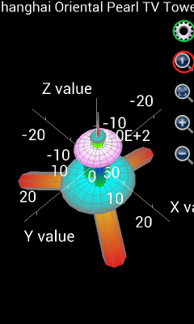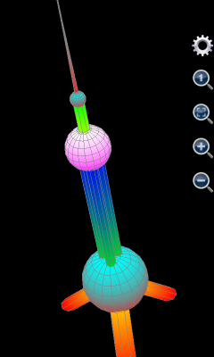
Figure 15: Draw Shanghai Oriental Pearl TV Tower.
Nevertheless, typing complicated expressions in a mobile device is never an easy job. So running an MFP script to call plot3d or plot_3d_surface function is the best alternative. If user knows how to program MFP language and how to use plot3d and plot_3d_surface, a simple MFP function can be implemented in a text file and saved into the mobile device. Then by simply typing the user-defined MFP function name in the Command Line tool (only several letters to input), user will be able to draw the TV tower.
Scientific Calculator Plus for JVM provides similar tools as the Chart Plotter in Android. Start Scientific Calculator Plus for JVM by double-clicking JMFPLang.jar file. There are three entries under“Tools” menu, i.e. “Plot 2D graph”, “Plot polar graph” and “Plot 3D graph”, corresponding to 2D, polar and 3D Android Chart Plotter respectively. A screen snapshot of 3D graph plotter in Scientific Calculator for JVM is shown below.

Figure 16: 3D graph plotter in Scientific Calculator for JVM.